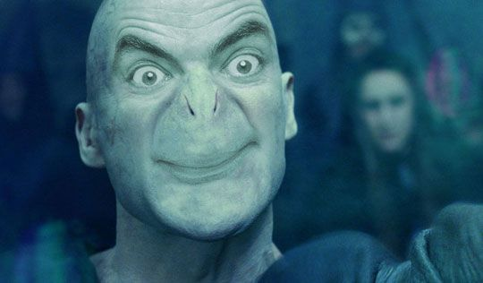

Voldemort, an anagrammatic sobriquet for Tom Marvolo Riddle, is the archenemy of Harry Potter, who according to a prophecy has "THE POWER TO VANQUISH THE DARK LORD". He attempts to murder the boy, but instead kills his parents, Lily and James Potter, and leaves Harry with a scar on his forehead in the shape of a lightning bolt. In a 1999 interview, Rowling said Voldemort was invented as a nemesis for Harry Potter, and she intentionally did not flesh out Voldemort's backstory at first.
